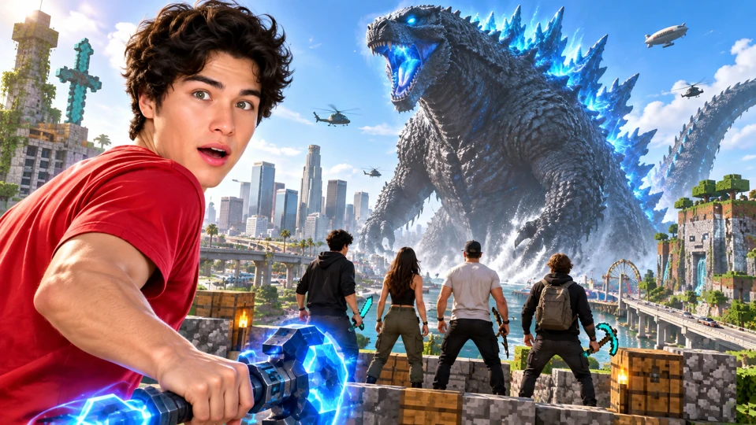
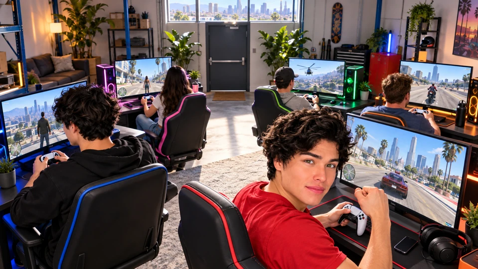

Launch video 1
I Beat The World’s Best Video Game
Five cast members each enter a different game crossover, complete a clear personal challenge and reunite to defeat one shared Godzilla.
Launch direction confirmed; the five pairings, cast assignments and mechanics below are a creative proposal.
The viewer promise
Five impossible experiences become one game the crew must beat together. The appeal is discovery, competitive reactions and a giant shared payoff; viewers need no prior game knowledge.
The objective
Clear one simple mission in each world, then survive and defeat Godzilla as a team.

Confirmed direction
- Alex, Alan, Kat, Tanner and Shawn each have their own setup and one different crossover.
- Intercut the five experiences; nobody is required to tour all five worlds.
- All five join one final Godzilla fight.
- Lead packaging with I Beat The World’s Best Video Game; the other existing titles remain tests.
First 30 seconds
Proposed opening beats; select real moments after the playable test and shoot.
- 0 (First Frame)–5sA real host rides a dragon over an impossible game collision, or another equally clear playable hero moment. Smash-cut to Godzilla towering over the crew. This shot only leads if its gameplay has been proved.
- 5s–15s“We combined our favorite games, gave everyone a different world, and now we have to beat them all.” Show five quick player/world reveals with one plain-language goal each.
- 15s–30sStart one real attempt: a car approaches a missing block bridge, then cut to a completely different player discovering their own problem. Leave the first outcome open only until the next relevant return.
Five proposed worlds
One different crossover per person, intercut into one common finale. Pairings and assignments are proposals to review.
1 · AlexGTA × Minecraft · Build the getaway
- Goal
- Deliver one marked car across a broken block-built route to a rescue pad.
- Playable interaction
- Three road gaps require a choice between limited bridge pieces, a risky ramp or a longer route. Building changes the driving problem.
- Failure and retry
- Falling or losing the marked car resets to the previous checkpoint and consumes the disclosed retry consequence.
- Escalation
- The last bridge must support the car while pursuing enemies close in.
- Shared finale role
- Proposed: build a short bridge or shield platform so the team can reach a boss weak point.
- Playable proof
- One drive/build/reset loop in a bounded GTA 5/custom scene. Cosmetic blocks alone do not deliver this crossover.
- Smaller version
- Use a small tested block course with prebuilt placement choices instead of free building across a whole city.
2 · AlanMinecraft × Halo, with optional Call of Duty-style horde detail · Dragon rescue
- Goal
- Disable three visible invasion beacons and rescue the villagers below.
- Playable interaction
- Ride a dragon and use a tested ranged weapon against beacon guards; Halo/Flood-inspired threats give the familiar Minecraft setting a new problem.
- Failure and retry
- Losing the dragon or a failed beacon approach returns to a clear checkpoint. Keep the rescue target count visible.
- Escalation
- The final beacon is protected by a larger wave, forcing a low pass or a different attack angle.
- Shared finale role
- Proposed: aerial distraction and an attack on the high weak point.
- Playable proof
- Rider control, aiming, target damage and reset must work together. The existing dragon and Halo component listings do not prove compatibility.
- Smaller version
- A short controllable dragon segment followed by a ground defense; revise the thumbnail if mounted weapon use is not playable.
3 · KatPokémon × Elden Ring · Tiny companion, giant enemy
- Goal
- Recruit one small companion and use its ability to defeat a much larger guardian.
- Playable interaction
- Choose between two readable companion abilities, then learn a visible boss attack and exploit its opening. Explain “catch a helper, dodge the giant, hit the weak spot.”
- Failure and retry
- A missed capture or boss defeat triggers the same agreed retry; no hidden stat or lore requirement.
- Escalation
- The guardian changes its attack in phase two, making the first strategy insufficient.
- Shared finale role
- Proposed: a support ability that protects or revives one teammate during the shared fight.
- Playable proof
- One bounded capture/companion/boss interaction in an approved custom route. Do not assume the commercial games can be networked together.
- Smaller version
- One fixed companion with one support action and a single custom guardian arena.
4 · TannerMario Kart × GTA · The impossible delivery
- Goal
- Carry a marked package through three city checkpoints and cross the finish with it.
- Playable interaction
- Kart-style items change a GTA-style road race: a boost opens a route, a shell forces a dodge, and a shortcut trades speed for danger.
- Failure and retry
- Dropping the package or missing a checkpoint returns to the last checkpoint; shortcuts count only inside the marked route.
- Escalation
- A giant chasing obstacle interrupts the final straight, making the item choice matter.
- Shared finale role
- Proposed: drive a distraction vehicle to pull Godzilla away from the ground team.
- Playable proof
- A short race course with working items, route checks and reliable resets. Equalize the tested controls before recording.
- Smaller version
- Two reliable items and three designed corners, rather than an entire new racing system.
5 · Shawn99 Nights (Roblox) × Fortnite · Build before nightfall
- Goal
- Protect one rescue beacon through three increasingly difficult night waves.
- Playable interaction
- Gather a small material allowance and build defenses before a shrinking safe area and a visible creature wave reach the beacon.
- Failure and retry
- Beacon destruction resets the wave with the disclosed consequence; do not turn it into an unexplained survival grind.
- Escalation
- The last wave attacks from two sides, forcing a tradeoff between repairing defenses and fighting.
- Shared finale role
- Proposed: place a defensive shelter or temporary cover during Godzilla’s area attack.
- Playable proof
- One build/defend/wave loop in a bounded custom scene. Roblox/Fortnite integration is a creative direction, not a confirmed cross-platform mod.
- Smaller version
- Fixed defensive placement points and three short waves with a clear safe-zone boundary.
Cast roles and competition rules
- Proposed assignment
- Alex: build/getaway; Alan: aerial rescue; Kat: companion/boss; Tanner: item race; Shawn: build/defend. Reassign from playtests and cast preference; these are not approved assignments.
- Ensemble edit
- Rotate discovery, competence, mistakes and recoveries across the entire cast. Neither twin automatically owns every important beat.
Rules to agree
- Start
- Introduce the five players and their five different missions before the first meaningful attempt. Use one face/name/world marker per person.
- Individual success
- Every mission has one visible finish condition. Each player earns a team ability for the finale by clearing their own mission; the abilities below are proposals to test.
- Failure and help
- A failed attempt returns to a disclosed checkpoint with a visible consequence. Players can exchange advice; they stay in their own worlds. No surprise eliminations.
- Convergence
- Once all five missions are cleared, move all players to the tested common arena. Show this transition clearly; seamless networking between different game engines is not required.
- Final win
- Destroy the three visible boss weak points, then complete the final team attack. If the team wipes, show the failed attempt and retry under the same disclosed rules.
Story progression and hero moments
Launch the five stories
Give each cast member an immediately different problem. Start with the clearest collision, then introduce the others through action rather than five long explanations.
Audience question: Which world would you choose, and who has the hardest mission?
Discover the rules
Cut between meaningful discoveries: one player finds a shortcut, another wastes a scarce tool, another learns a boss pattern. Return before an open question feels abandoned.
Audience question: Can the crew turn these unfamiliar mechanics to their advantage?
Pressure and reversals
Reveal the next obstacle when a player appears comfortable. Use visible progress and honest resets; do not manufacture the same setback for everyone.
Audience question: Will the last unfinished mission hold everyone back?
Earn the convergence
Show every mission’s actual finish and the ability it contributes. A simple transition moves the cast into one common arena.
Audience question: Will five very different abilities work together?
Fight Godzilla together
Phase one teaches a readable attack. Phase two requires two roles to cooperate. The final weak point needs the full team’s coordinated attempt.
Audience question: Can they complete the team attack before the boss overwhelms them?
Pay off the title
Show the actual winning hit, immediate cast reactions and a concise look back at the five worlds. If the filmed result changes, let the result determine the ending.
Audience question: Did this custom game earn the “world’s best” claim for this crew?
Moments to earn on camera
- A collision that changes the action
- A block bridge changes a car route; a tiny companion counters a giant; a familiar kart item becomes a city-scale problem. Show the mechanic causing the result.
- The last solo finish
- The others can advise and react while the last player attempts their mission. Keep the outcome genuine and include the successful attempt.
- Five-player rescue
- One player’s mistake during the boss fight creates a clear reason for another player’s earned ability to matter.
The shared Godzilla finale
- Readable objective
- One Godzilla, one arena and three visible weak points. Keep the boss and team progress on screen; avoid five separate meters viewers cannot interpret.
- Meaningful cooperation
- Ground distraction exposes a target, a builder creates access, the flyer reaches the high point, and support/defense keeps the attempt alive. Roles can be swapped after testing for actual fun and balance.
- Earned jeopardy
- Telegraph a stomp or area attack so viewers understand why the crew moves. A failed coordinated attack creates a real recovery problem rather than an arbitrary cutscene.
- Actual team gameplay
- The five players must affect the shared fight. Cinematic inserts can show scale; a rendered sequence cannot stand in for their participation.
Title and thumbnail directions
Three compositions to test after gameplay proof. Existing canvas images are references, not newly approved packages.
- Representative collision
- Photographic Stokes host on the playable dragon with one clean threat group below, luminous blue sky and minimal text. Retain as a reference until the flight/weapon mechanic is proved.
- Five worlds, one threat
- One large human foreground, a simple five-region world composition and a dominant Godzilla silhouette. Distinct worlds must read as regions, not a logo collage.
- Team versus the boss
- Real cast foreground reacting to an enormous Godzilla in a game arena. Keep one face dominant and the other players supportive so the image works at phone size.
Playable proof and capture
- Minimum playable proof
- Prove one individual mission, the common five-client arena and the handoff before expanding the other worlds. Record an actual control-to-outcome test.
- Repeatable recovery
- Every scene needs a known reset, a working save/checkpoint and a way to restore a failed client without pretending the failure did not happen.
- Capture needs
- Save each individual game feed and player reaction separately, plus the common finale feeds. Preserve the moment that proves each mission and the final win.
- Scope boundary
- Modded GTA 5 and a separate recreation with AI-assisted development are candidates. A wholly new engine or seamless engine-to-engine networking is not assumed complete.
Before filming
- A new viewer can name each player’s goal after its first reveal.
- The package depicts a mechanic or scene that actually exists in the finished episode.
- Every world contributes a distinctive discovery and a visible result.
- The shared boss resolves the five-world story instead of feeling like an unrelated extra video.
Editing and Shorts
Long-form edit
- Comprehension
- Use a consistent cast/name/world marker, one sentence of rules at first use and a visible objective. Explain the consequence of an item before relying on game knowledge.
- Intercutting
- Cut when a discovery, decision or consequence earns the next point of view. Do not alternate mechanically just to give everyone equal seconds.
- Finale transition
- Explain that the five experiences lead into the common boss arena; use the same earned ability labels so the transition feels like a payoff.
- Localization
- Prefer icons, simple verbs and short labels. Keep jokes understandable through action and reactions; separate dialogue, music and game sound for later localization.
Self-contained Shorts
- Impossible interaction
- One recognizable crossover, a first attempt and its result in a self-contained extract.
- Crew recovery
- A player makes a readable mistake, then a teammate’s advice or ability changes the outcome.
- Shared boss payoff
- A short role/reversal/winning action that makes sense without explaining all five worlds.
Creative choices still open
- Approve or revise the five proposed pairings and cast assignments.
- Choose the exact mission finish conditions, retry consequences and finale abilities after prototype playtests.
- Select a title/composition matched to the proved hero moment; commission revised artwork only after that choice.
References and evidence limits
- MrBeast Gaming · World's Largest Minecraft Build!
Observed thumbnail: large real host beside a block-built Earth with bright blue sky. Style/composition reference only; no claim this validates the new crossover.
- Halo & MDE
Developer-maintained Halo mod listing. Candidate component, not a tested full crossover stack.
- Dragon Mounts Remastered
Developer-maintained rideable dragon mod listing. Does not establish that the exact Ender Dragon and gun combination works.
- Immersive Vehicles
Developer-maintained vehicle framework. Candidate tool, not evidence of GTA integration.
Existing composition and component references are adjacent evidence. They do not establish a working nine-game stack, tested five-world retention or causal thumbnail lift.
Launch video 2
I Found The Leaked GTA 6
Alex gives the crew a convincing custom “early GTA 6” experience, lets their suspicions build and reveals how he fooled them.
Alex’s prank and audience uncertainty are confirmed; the mission sequence and reveal mechanics below are proposed.
The viewer promise
An extraordinary-looking game raises one question: is this actually real? The audience gets enough clues to form a theory while the cast tries to finish a fun challenge.
The objective
The crew attempts three increasingly strange missions while Alex tries to keep his supposed early build believable until the final reveal.
Confirmed direction
- Alex is the informed prankster; Alan, Kat, Tanner and Shawn are the intended targets.
- Keep the audience guessing from the opening rather than announcing the prank immediately.
- The experience is a staged GTA 5/custom build, not a genuine GTA 6 leak.
- Confirm actual briefing history before describing a reaction as unaware.
First 30 seconds
Proposed opening beats; select real moments after the playable test and shoot.
- 0 (First Frame)–5sShow a convincing-looking sunny city/game moment and a genuine “how did you get this?” reaction. Avoid an opening explanation that gives away the trick.
- 5s–15sAlex presents the supposed access and the crew starts one simple mission. Establish what would make the experience extraordinary without inventing a real leaked source.
- 15s–30sA small unusual detail creates the first doubt, but a playable driving moment pulls the crew back into the challenge. Let the audience start forming its own theory.
Cast roles and competition rules
- Alex
- Owns the misdirection, responds to suspicion and delivers the reveal. His control is the story’s engine, but the edit can withhold selected information until payoff.
- Alan, Kat, Tanner and Shawn
- Each gets a distinct attempt or investigation: driving, testing an interaction, following a clue or challenging Alex’s explanation. Assign the exact missions around authentic reactions, not predetermined “believer” or “skeptic” roles.
- Knowledge boundary
- Separate people who know the setup from the intended targets before filming. If someone already knows, use their actual role rather than presenting them as fooled.
Rules to agree
- Player objective
- Deliver one marked car, complete a short escape and reach a final reveal location. The cast can understand the task even if they have never played GTA.
- Alex’s constraint
- He operates only the prepared changes. He must answer the crew’s challenges using the actual build; he cannot simply declare every impossible event normal.
- Suspicion
- Track real questions and predictions in the edit. A suspicion board is an editorial device, not a score that guarantees everyone is fooled.
- Retries
- Technical crashes are production failures, not proof of an intentional prank. Use a tested restart point and be truthful if a failure affects the story.
- Payoff
- The final location exposes the mechanism and Alex takes responsibility. Show the crew understanding the trick and trying the revealed mechanic themselves.
Story progression and hero moments
Make the access feel extraordinary
A convincing single district, responsive car handling and one polished interaction establish why the crew would keep playing. Use only apparent proof the staged premise can support.
Audience question: Did Alex really get something nobody else has?
First mission: delivery
The crew follows an easy route to a marked destination. A subtle repeated character, oddly familiar building or unusual sign gives attentive viewers a clue.
Audience question: Is that detail a clue or just an unfinished game?
Second mission: escape
A controlled chase introduces one absurd behavior that is still playable. The crew tests Alex’s explanation instead of passively listening to it.
Audience question: Can the build survive an unscripted test?
The crew investigates
Let a real suspicion change the action: take an unexpected turn, revisit the odd interaction or ask to try a different vehicle. Preserve the cause-and-effect chain.
Audience question: Who will work out what Alex changed?
Third mission: the impossible location
The final objective leads to a location that exposes the setup: a custom room or world element directly tied to Alex and the crew. It should answer earlier clues.
Audience question: What is behind the final door?
Reveal and reaction
Alex explains the custom GTA 5/recreation route in plain language. Show brief proof of the trick and the crew’s real responses, then give them a short turn playing with it knowingly.
Audience question: Which clue should have given it away?
Moments to earn on camera
- Almost caught
- A target tests something Alex did not expect. Hold enough of the interaction to show whether his explanation actually survives.
- A believable game becomes ridiculous
- One prepared change turns a normal delivery or escape into a surprising crew problem; its consequence stays understandable.
- The evidence pays off
- Revisit two or three earlier clues after the reveal. The viewer gets the satisfaction of solving the same puzzle, not an unrelated backstage montage.
If the shoot develops differently
- Someone identifies it immediately
- Do not reset their knowledge or ask them to fake belief. Shift to whether Alex can convince the others, or whether the crew can find every planted change.
- Everyone believes too long
- Let the mission introduce a stronger, playable inconsistency. The reveal still needs evidence and a satisfying reaction; extra minutes of driving are not suspense.
- A target already knows
- Reframe their role openly in the planning/edit. The remaining unaware reactions can carry the prank without fabricated innocence.
- The build cannot support exploration
- Use a bounded route and a clear mission boundary. A convincing small experience is preferable to promising a whole unexplorable game.
Title and thumbnail directions
Three compositions to test after gameplay proof. Existing canvas images are references, not newly approved packages.
- Mystery access
- Large photographic host holding one intriguing object beside a beautiful game scene. The object is a metaphor for access, not evidence of an actual leaked drive.
- Is this real?
- Real host at a station with one striking in-game vista or uncanny detail. Keep the uncertainty in the image and avoid an obvious prank reveal.
- Title alignment
- I Found The Leaked GTA 6 remains a working packaging test. The episode must reveal that it is staged; do not invent genuine developer access or unsupported provenance to justify the title.
Playable proof and capture
- Playable scope
- Build one convincing district/route and three reliable mission interactions, with operator controls and reset points. More visual detail only helps if the crew can play it.
- Source of the illusion
- Visual polish, selected models and post effects support the story. Upscaling or AI-assisted development does not turn GTA 5 into actual GTA 6.
- Reaction capture
- Preserve each target’s first encounter, questions and the moment their belief changes. Later pickups should not be presented as first reactions.
- Reveal proof
- Capture a simple demonstration of the changes Alex controlled so the ending answers the audience’s questions.
Before filming
- A non-gamer understands the mission and why the supposed access matters.
- Suspicion produces new action instead of repetitive dialogue.
- The reveal explains the planted clues and correctly identifies the build.
- Claims about who knew the prank match the actual briefing and footage.
Editing and Shorts
Long-form edit
- Keep the audience guessing fairly
- Withhold the explicit mechanism, but include real clues and doubts. Avoid editing a sincere objection out just to claim the crew was completely fooled.
- Escalation
- Move from plausible polish to a small oddity, then a consequential inconsistency, then the reveal. Each step changes what the crew does.
- Pacing
- Cut unproductive navigation and technical explanations. Keep the moments where a player tests, doubts, commits or catches Alex.
- Ending
- Resolve the prank, identify the custom experience and pay off the strongest clue. Let the final cast reaction close the story.
Self-contained Shorts
- Suspicion without the answer
- One strange interaction and a cast theory, with a clear route to the full episode after release.
- Reveal extract
- After the long-form reveal is public, show the clue, the explanation and the immediate reaction as a complete short.
- Playable absurdity
- A standalone mission change with its own funny consequence; it should still make sense without the leak premise.
Creative choices still open
- Choose the bounded custom route and three prepared interactions after a playable test.
- Confirm the cast knowledge boundary and what Alex can control live.
- Choose the strongest reveal mechanism and a package that preserves uncertainty without inventing genuine leak evidence.
References and evidence limits
- Stokes Twins · Prisoner Drive Thru Prank
Observed source image: a real host in an orange prisoner costume inside a car, with a highlighted secondary face. The prank performance and human context are useful; the source is 2.94x.
Public snapshot: 2026-10-05. Historical observation, not current performance.
- Stokes Twins · 365 PRANKS IN 365 DAYS!!
Original is a two-panel prank thumbnail. One panel places a threat behind an unaware person; our chase combines that relation into a single coherent game scene.
Public snapshot: 2026-10-05. Historical observation, not current performance.
- Stokes Twins · BUSTING VIRAL TIKTOK GADGETS!!
Large host gesture at left presents one surprising gadget mechanism at right. We keep the presentation gesture and replace the dark background with the requested blue sky.
Public snapshot: 2026-10-05. Historical observation, not current performance.
Public prank and gaming references support adjacent packaging/story analysis. They do not prove that a fake-GTA-access premise will outperform or that these specific reactions will occur.
Launch video 3
I Survived 100 Hours in GTA
Alex, Alan, Kat, Tanner and Shawn start separate GTA 6 runs in one room, and the first person to finish wins and lets the whole crew leave.
Actual GTA 6, five individual runs and first-finisher group release are confirmed; finish proof and competition rules below remain to agree.
The viewer promise
Five personalities race toward one clear finish while sharing the consequences of staying in the room. The audience can follow the leader, recoveries and crew dynamics without knowing GTA missions.
The objective
Be the first to complete the agreed main-story finish condition in actual GTA 6.

Confirmed direction
- Five players each have an individual game run; this is not assumed to be shared story co-op.
- The first completion wins and releases everyone together.
- 100 hours is a working title. Actual elapsed duration determines the final truthful package.
- Godzilla is in the first mashup video, not this completion challenge.
- Record from actual game access, assemble while recording and publish ASAP after the winner, group release and final QC.
First 30 seconds
Proposed opening beats; select real moments after the playable test and shoot.
- 0 (First Frame)–5sFive occupied stations, the room door closing and a readable elapsed clock. Cut to a genuine late-race reaction that does not reveal who wins.
- 5s–15s“We can’t leave until one of us beats GTA 6.” Explain that everyone has their own run and the first finisher releases the entire crew. Show the agreed finish marker.
- 15s–30sStart the real competition. One player gains an early advantage while another faces a readable setback; establish the cast through choices and reactions, not a long setup tour.
Cast roles and competition rules
- All five competitors
- Alex, Alan, Kat, Tanner and Shawn each have a visible progress lane. Let the footage establish the confident starter, surprise leader, helper and comeback player; do not assign fictional skill rankings in advance.
- Crew tension
- Someone may help a rival because any winner lets them leave, then regret giving away their lead. Follow that tension only if it happens.
- Winner uncertainty
- Build the edit around actual progress and finish proof. Either twin or any crew member can carry the decisive final run.
Rules to agree
- Matched start
- Begin from the same agreed game state and use the same difficulty/settings where the actual game allows them. Record the starts and any unavoidable difference.
- Finish proof
- Recommended: the agreed main-story ending/credits checkpoint, chosen after the real game’s completion routes are understood. Side activities and 100% completion are excluded unless the cast deliberately chooses a different premise.
- Individual runs
- Each player controls their own run. No save transfers, substitute players or unannounced skips. Agree any assistance policy before the race.
- Help policy proposal
- Players can talk and exchange advice because their shared exit encourages cooperation; nobody takes over another person’s controls. This creates a useful tension between personal victory and collective release.
- Failures and interruptions
- Normal in-game failures use the game’s normal retry/save system. Log a technical outage separately and apply the same agreed remedy to everyone; the precise remedy is a pending rule.
- Room and breaks
- Agree a fair rest/break policy before recording. Keep the elapsed clock honest and explain meaningful pauses. The room is the challenge setting; the premise does not depend on denying ordinary needs.
- Winner and release
- The first verified finish ends the competition and releases all five. There is no requirement to film the others completing separate endings after the race is over.
Story progression and hero moments
Start and establish the rule
Show matched starts, the room promise and five clear progress lanes. Use only the first meaningful mission decisions needed to understand each competitor.
Audience question: Who gets ahead first?
Early confidence meets the game
Find the first genuine skill gap or mistake. Explain what the setback costs in progress, rather than assuming viewers know the mission.
Audience question: Is the early leader actually the strongest player?
The room becomes part of the story
Use breaks, food, rivalry and advice where they change the competition. Time jumps are explicitly labeled; do not confuse hours elapsed with hours of uninterrupted play.
Audience question: Will they prioritize winning or helping someone finish?
Comebacks and late-race pressure
Crosscut actual reversals and approaching finish checkpoints. A delayed feed or editing choice must not imply a close race that did not happen.
Audience question: Can the trailing player catch the real leader?
Verify the first finish
Hold enough gameplay and reaction to establish the actual ending checkpoint. Confirm who finished first using synchronized records, then reveal the winner.
Audience question: Is this the run that finally lets everyone out?
Release and close
Show the whole crew leaving together and a concise final progress/elapsed-time wrap-up. Their unfinished runs are a scoreboard recap, not a new requirement to stay.
Audience question: How long did it really take, and who was closest behind?
Moments to earn on camera
- A clear progress reversal
- A player loses an apparent lead through a normal mission failure, while another completes a visible milestone. Explain both sides of the change.
- Help the rival
- Keep a real exchange where advice makes the group’s exit more likely but threatens the helper’s chance to win.
- The finish in the room
- Capture the winning game state, the winner’s first reaction, the others discovering it and the group-release action as one connected payoff.
If the shoot develops differently
- It takes far less than 100 hours
- Use the actual duration or a completion-led title. Do not prolong the recording or fabricate the clock to preserve a working headline.
- It takes much longer
- Follow the agreed break/save policy, keep the room story truthful and let recording length determine the edit; no fixed 100-hour quota is assumed.
- The winner leads comfortably
- Use the genuine suspense of whether they can finish and release the crew. Do not fabricate an opponent who is seconds behind.
- Two players appear to finish together
- Use synchronized game capture and the agreed checkpoint to resolve order. Establish a tie rule before recording rather than improvising a favorable winner.
- Actual GTA 6 access/capture is not proved
- Keep the episode pending. The modded GTA 5/recreation route belongs to the custom episodes and cannot be relabeled actual GTA 6.
Title and thumbnail directions
Three compositions to test after gameplay proof. Existing canvas images are references, not newly approved packages.
- Room and race
- A photographic host in the foreground, the other four occupied stations and one clear door/clock cue. The image should communicate “finish the game to get out.”
- Real elapsed time
- A tired or triumphant real cast reaction beside a readable elapsed clock can work after the duration is known. Do not bake an unearned 100-hour claim into the final art.
- Title tests
- Keep I Survived 100 Hours in GTA as provisional. I Beat GTA 6 and a completion/room-led title are alternatives; choose after footage establishes the actual story.
Playable proof and capture
- Actual access and individual state
- Prove five actual game runs, settings, save states and supported access/capture. PCs may be capture/control stations, but that is not proof of a native PC version.
- Finish verification
- Use synchronized timestamps on the game and room records. Preserve uninterrupted evidence around each possible winning checkpoint.
- Long-session capture
- Test storage rollover, recording continuity, game saves and a recovery procedure before relying on a long recording. Detailed infrastructure costs stay in the private packet.
- Rolling post
- Log milestone progress and assemble while recording. The final cut waits for verified winner/group release and final picture, sound and factual QC.
Before filming
- A new viewer understands that one person finishing releases everyone.
- The final title and clock match actual recorded duration.
- The scoreboard reflects real milestones and the winner is supported by finish evidence.
- The ending resolves the winner and group release without reintroducing the superseded individual-exit rule.
Editing and Shorts
Long-form edit
- Readable progress
- Use a five-lane scoreboard tied to actual verified milestones. Do not invent a percentage when the game supplies no reliable completion measure.
- Compress repetition
- Summarize repeated driving or failed attempts when they add no new decision; preserve the attempt that changes the lead or the player’s strategy.
- Truthful time
- Show elapsed-time jumps and meaningful breaks clearly. A tight edit can still make the length and changing room mood understandable.
- ASAP publication
- Prepare reusable progress graphics and ongoing assemblies, then finish from the real outcome. Fast turnaround does not justify losing the finish proof or confusing the release rule.
Self-contained Shorts
- A comeback
- One setback, the player’s changed approach and the result, with a simple progress graphic.
- Crew rivalry
- A short advice/trash-talk exchange tied to a visible game consequence.
- Everyone gets out
- After the episode’s intended release, the winning finish and whole-room reaction form a standalone payoff.
Creative choices still open
- Agree the exact story-finish checkpoint, assistance policy, break rule, tie rule and technical-outage remedy.
- Prove actual game access and synchronized five-station capture.
- Select the final title and revised room-focused artwork from the recorded story and duration.
References and evidence limits
- MrBeast Gaming · 1 vs 10 Hunters in GTA!
Large real host at left with an airborne supercar on a clear diagonal at right against blue sky.
Public snapshot: 2026-10-05. Historical observation, not current performance.
- Stokes Twins · 365 PRANKS IN 365 DAYS!!
Original is a two-panel prank thumbnail. One panel places a threat behind an unaware person; our chase combines that relation into a single coherent game scene.
Public snapshot: 2026-10-05. Historical observation, not current performance.
- MrBeast Gaming · World's Fastest Car!
Observed source image: host left beside a rear-view sports car on a bright green acceleration lane. Source score 3.68x is a qualifying public outlier.
Public snapshot: 2026-10-05. Historical observation, not current performance.
Existing gaming competition references are adjacent. No private launch-channel retention, CTR or verified audience response is supplied; the hook and edit choices are proposals to test.
The public Influint Gaming export was refreshed October 15. Its premise/escalation/rules and game-swap guidance inform these proposals as Theory, not measured guarantees. Public outliers support adjacent formats; they do not supply CTR, private retention curves or compatibility proof. Inspect the Gaming intelligence.
Use actual 24-hour, 7-day and first-28-day results per upload. No private CTR or retention curves are available.